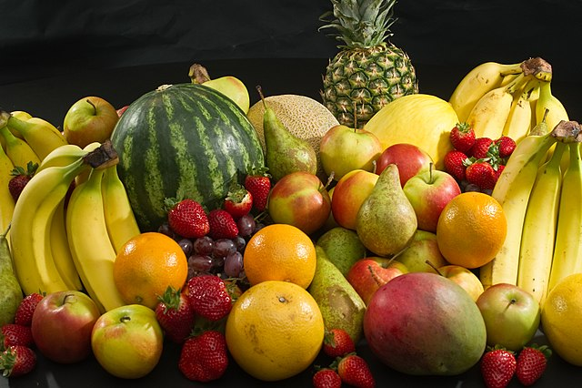

In botany, a fruit is the seed-bearing structure in flowering plants (also known as angiosperms) formed from the ovary after flowering.
Many hundreds of fruits, including fleshy fruits (like apple, kiwifruit, mango, peach, pear, and watermelon) are commercially valuable as human food, eaten both fresh and as jams. They are also used in manufactured foods and beverages. If you want to read more about types of fruit, here is a good website for that.